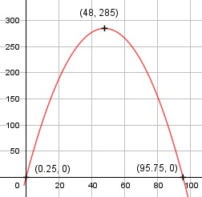

Aufgabe 9 f(x) = - 0,125x2 + 12x - 3 f'(x) = -0,25x + 12, f''(x) = -0,25, f'''(x) = 0 Definitionsbereich: -∞ < x < ∞ Wertebereich: -∞ < f(x) ≤ 285 (siehe Extrempunkte) Asymptoten: - Symmetrie: - Nullstellen: - 0,125x2 + 12x - 3 = 0 |:(-0,125) x2 - 96x + 24 = 0 p, q - Formel: p = -96, q = 24 x1,2 = x1,2 = 48 ± x1,2 = 48 ± x1,2 = 48 ± 47,75 x1 = 95,75 x2 = 0,25 N1(95,75|0), N2(0,25|0) Schnittpunkt mit der y-Achse: f(0) = - 0,125 * 02 + 12 * 0 - 3 = -3 Sy(0|-3) Extrempunkte: -0,25x + 12 = 0 |+0,25x 0,25x = 12 |:0,25 x = 48, f(48) = - 0,125 * 482 + 12 * 48 - 3 = 285 f''(x) = - 0,25 < 0 --> Hochpunkt (48|285) Alternativ: Scheitelpunktberechnung f(x) = - 0,125x2 + 12x - 3 |:(-0,125) f(x) --------- = x2 - 96x + 24 -0,125 f(x) -------- = (x - 48)2 - 2304 + 24 |*(-0,125) -0,125 f(x) = - 0,125 * (x - 48)2 + 285 Wendepunkte: -0,25 = 0 --> Widerspruch, keine Wendepunkte Graph:
